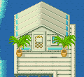
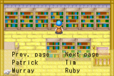

Os itens que voce recebe da conectividade entre os dois jogos sao baseados no progresso dos dois jogos. Se voce nao joga "AWL", voce nao tera nenhum bonus em FoMT (e vice versa). Quando voce passa por cada captulo da vida, voce ira receber novos itens nos dois jogos. Apenas se lembre da conectividade que so parece funcionar melhor por estacao em "AWL". Itens do Van frequentemente estao a vendas em FoMT antes de voce comprar eles em "AWL". Depois da conectividade, os aldeoes em "AWL" contara sobre o novo mundo de FoMT.
 As Musicas
As Musicas
Nos dois jogos voce encontrara um tocador de musica. Em "AWL" o tocador esta dentro de sua casa, mas em FoMT voce tem que conectar antes que voce possa compra-lo de Van. Quando voce compra por 2000G ele ficara na pequena mesa dentro de sua casa. enquanto voce continua conectado aos dois jogos juntos, voce pode comprar musica para mudar a musica de fundo de seu jogo. Em "AWL" so as musicas que toca quando voce esta em sua fazenda muda, mas em FoMT tambem afeta a musica que toca quando esta caminhando proximo ao "Mother's Hill". O legal do tocador de "AWL"e que voce pode desliga-lo e ficar sem musica tocando. Removendo o tocador em FoMT ira causar a musica de fundo da estacao original a tocar novamente. Van esta em FoMT nas Quartas-Feiras na Pousada do Doug/Doug's Inn. Em "AWL" ele esta la oficialmente no terceiro e oitavo dia de cada estacao, mas ele pode aparecer em qualquer dia.
| Musicas/ Gravacoes |
FoMT | AWL |
|---|---|---|
| Record 01 - SNES: Spring song / Musica 01 - Musica da Estacao da Primavera do Harvest Moon do Super Nintendo |
500G | 430G |
| Record 02 - SNES: Event theme / Musica 02 - Tema do evento do SNES | 600G | 430G |
| Record 03 - N64: Fall song / Musica 03 - Musica do Outono do Harvest Moon N64 | 700G | 600G |
| Record 04 - N64: Opening song / Musica 04 - Musica de abertura do N64 | 800G | 600G |
| Record 05 - BTN: Girl's song / Musica 05 - Musica das Garotas do Harvest Moon BTN | 900G | 640G |
| Record 06 - BTN: Girls' love theme / Musica 06 - Musica do tema de Namoro das Garotas do BTN | 1000G | 640G |
| Record 07 - STH: Spring season map - Musica 07 - Mapa da estacao de Primavera do STH (Save the Homeland) | 1100G | 810G |
| Record 08 - STH: Autumn Forest theme - Musica 08 - Tema da Floresta no Outono do STH | 1200G | 810G |
| Record 09 for FoMT - AWL: Winter theme / Musica 09 para FoMT - AWL: Tema de Inverno | 1300G | -- |
| Record 10 for FoMT - AWL: Blue Bar night song / Musica 10 para FoMT - AWL: Cancao noturna no Bar Azul | 1400G | -- |
| Record 09 for AWL - FoMT: Winter theme / Musica 09 para AWL - FoMT: Tema de Inverno | -- | 900G |
| Record 10 for AWL - FoMT: Wedding ceramony / Musica 10 para AWL - FoMT: Cerimonia de Casamento | -- | 900G |
As duas ultimas musicas nos dois jogos toca a musica oposta do jogo. Musica09 e 10 toca a musica de AWL quando comprado de FoMT e quando comprado em AWL vai tocar a musica de FoMT.
Receitas
Alem de Van Viajar entre os dois jogos, Ruby tambem aparece. Ela ficara na Pousada do Doug/Doung's INN nos Domingos e ela sempre esta por ai em AWL. frequentemente ela ficara na cozinha ou atras da pousada de MiTeMI, mas as vezes ela sai e anda por ai. Se voce conversar com ela depois de conectado, ela dara instrucoes a voce de como cozinhar um novo prato. Em FoMT ela contara apenas uma vez, mas em AWL ela pedira se ela precisa repetir as instrucoes. Uma vez que acaba o dialogo com ela, ela nao vai contar a voce a receita novamente, entao tente anotar da primeira vez. Ela dara 5 novas receitas nos dois jogos.
| Receitas em AWL |
|---|
| Marinade = (Tomato or Turnip) + Fish + Kaori Herb [Salad Menu] / Marinade = (Tomate ou Nabo) + Peixe + Erva Kaori (Kaori Herb) [Menu da Salada] |
| Tomato Soup = Tomato + Carrot [Soup Menu] / Sopa de Tomate = Tomate + Cenoura [Menu da Sopa] |
| Sweet Potato Soup = Sweet Potato [Soup Menu] / Sopa de Batata Doce = Batata Doce [Menu da Sopa] |
| Hokkori Soup = Potato + "Wild" item (herb, etc.) + Mushroom [Soup Menu] / Sopa Hokkori = Batata + item "Wild/Silvestre/do campo" (herva, etc...) + Cogumelo/Mushroom [Menu da Sopa] |
| Ramura Tart = Peach + Egg + Butter [Sweet Menu] / Ramura Tart = Cereja/Peach + Ovo/Egg + Manteiga/Butter [Menu Doce] |
| Receitas de FoMT |
| Wild Grape Juice = Wild Grape + Wine + Purple Grass + Pot / Wild Grape Juice (Suco de Uva Silvestre) = Uva Silvestre + Vinho + Grama Roxa + Um pote |
| Cornflakes = Corn + Rolling Pin + (Oven or Frying Pan) / Cornflakes = Milho/Corn + Rolo/Rolling Pin + (Forno ou Frigideira) |
| Nao me lembro agora... |
| Nao me lembro agora... |
| Nao me lembro agora... |
Chale na Beira do Mar

Quando voce conecta a AWL de FoMT voce notara que depois da conexao ter completado, a Deusa da Colheita/Harvest Goddess mostrara uma tela toda com estrelas. Tem 42 pequenas estrela para voce preencher. Quando voce primeiro comeca jogando AWL voce entregara muitos ovos e leites. Voce pode ate mesmo chocar galinhas extras e vendelas tambem. Depois voce recebe um Tsurudan e comeca a produzir plantacoes hibridas, mostre a Takakura uma de suas colheitas de terceira geracao e ele colocara uma cesta em sua caixa de entrega. Voce pode entao entregar qualquer plantacao da terceira geracao via esta cesta, mas ela deixara uma anotacaosuja se voce tentar colocar plantacoes da primeira ou segunda geracao. Voce esta acordado e fora quando Takakura apanha um animal para cendernamanha, voce vera que ele subiu o morro que tem rumores para ir a cidade Mineral/Mineral Town. A deusa vai te parabeizar depois que voce ganhou sua ultima estrela em FoMT. Como recompensa ela dara a voce um chale na praia, uma pequena casa que fica fora da praia Mineral. Dentro da casa voce encontrara uma cama e uma janela. no qual mostra diferentes imagens dependendo do tempo do dia. Durante o Inverno sua casa de praia tem um boneco de neve na porta.
O Diretorio do Personagem

A biblioteca de Mary na cidade Mineral e cheia de livros que ajudam voce a jogar o jogo do GBA. Depois de voce conectar com AWL vai ter um livro novo que aparece na estante no segundo anda. No livro voce encontrara descricoes de todos os personagens em AWL. As paginas do livro vao preencher enquanto voce continua a conectar os dois jogos juntos. Voce vai saber por que Murray esta em Forget-Me-Not Valley, por quem Gustafa esta apaixonado e outras pequena coisas que nao sao mencionados em AWL. Voce tera um escrito no livro de Mary para seu personagem em AWL. Seu proprio escrito mencionara que voce vive com 3 filhos, o que nao exatamente verdade desde que voce so pode ter 1 filho. Se voce conectar os jogos juntos muitas vezes e nota que nao tem nenhum item na loja de Van em AWL, voce precisa falar a Van em FoMT. Va para a pousada/INN na quarta-feira e fale com ele atras do balcao ate ele mencionar a volta para o vale/valley. Quando voce faz a ligacao na proxima vez, seu jogo AWL tera novos itens para venda em sua loja.